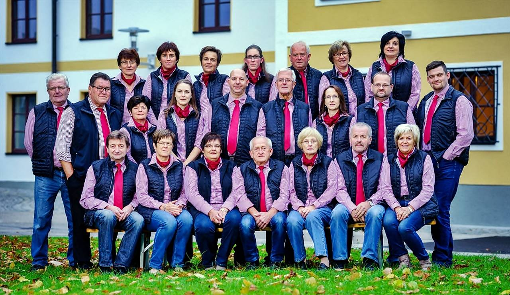
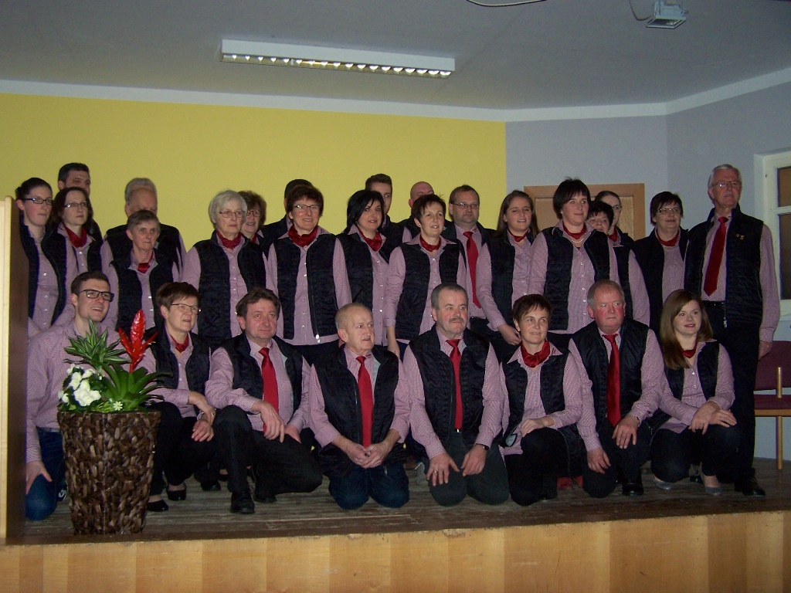

Zur Aufbesserung der Jugendkassa beschloss die Katholische Jugend Atzbach unter Führung von Maria Mittermayr und Max Doppler im Jahr 1967 ein Theater zu spielen.
Durch Errichtung des neuen Pfarrsaales waren dazu beste Vorraussetzungen gegeben. Mit der Spielleitung wurde Herr Johann Haas betraut.

Am 15. Juli 1967 war die Premiere des Stückes „Die Sternhoferbuam auf Brautschau“. Es gab drei Aufführungen, welche für die damaligen Verhältnisse ein großer Erfolg waren. Ab dem Jahr 1970 übernahm Frau Anna Kronlachner die Regiearbeit.
Die Stücke „Das große Heimweh“ und das „Heiratsgenie“ wurden in den Jahren 1973 und 1974 auch in Ottnang, Desselbrunn und Schwanenstadt aufgeführt.
Im Jahre 1973 löste sich die Theatergruppe von der Katholischen Jugend und wurde selbstständig. Die Leitung übernahm Heinz Schachreiter. Durch seine besonderen Werbeaktivitäten und das Bemühen der Gruppe, in jedem Stück ihr Bestes zu geben, erhöhte sich die Zahl der Besucher von Jahr zu Jahr. Aus diesem Grunde wurde auch im Jahr 1977 die Platznummerierung vorgenommen.
Über den Vorschlag von Heinz Schachreiter wurde im gleichen Jahr die Bezeichnung „Atzbacher Theaterwochen“ eingeführt. Heute freut sich die Theatergruppe Atzbach, bei ihren Aufführungen Reisegruppen aus verschiedenen Teilen Oberösterreichs begrüßen zu dürfen. Da der Reingewinn laut Vereinsbeschluss immer für kirchliche bzw. karitative oder soziale Zwecke verwendet wird konnten von der Theatergruppe beachtliche Investitionen getätigt werden.
